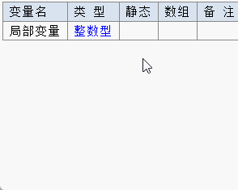
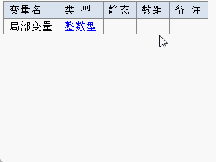
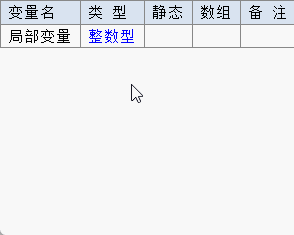
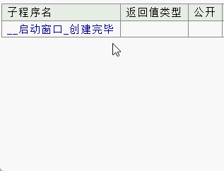
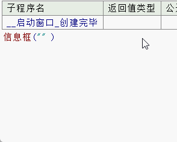
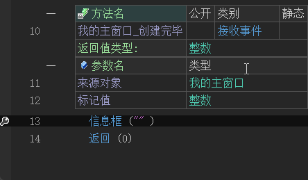
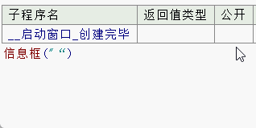
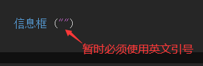
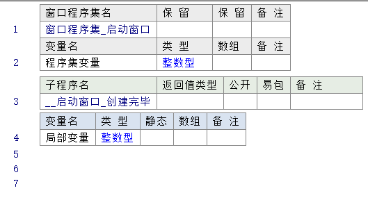

1、代码输入方式差异
易语言支持首拼、全拼、汉字、双拼，同时也支持汉字与拼音混输的智能输入方式。
在火山平台中除了暂不支持双拼外，其余输入方式都支持。并且也可以在按下空格或回车键可将首个提示内容输入到代码编辑框中。
如下所示：
输入方式演示如下：
(1) 首拼输入
易语言输入演示：
如下所示，输入“jbbl”就可以表示“局部变量”。

火山输入演示：
如下所示，输入“jbbl”就可以表示“局部变量”。
(2) 全拼输入
易语言输入演示：
如下所示，输入“jubu”加空格就可以快速输入“局部变量”。

火山输入演示：
如下所示，输入“jubu”加空格就可以快速输入“局部变量”。
(3) 汉字输入
易语言输入演示：
如下所示，输入“局部”也可以将“局部变量”完整的提示并输入。

火山输入演示：
如下所示，输入“局部”也可以将“局部变量”完整的提示并输入。
火山平台暂不支持以下功能：
(1) 在易语言中输入“ bjk1.nr=“” ”，可以将此语句直接转换成“ 编辑框1.内容=“” ”从而实现对编辑框内容的赋值，火山中暂不支持此输入方式，如下所示：

(2) 易语言中当光标离开当前行后会对当前行进行自动整理并预编译，火山中暂时需要依赖“Enter(回车键)”或者“Ctrl+Shift+Enter”对当前语句编译，如下所示：
易语言演示：

火山演示：
注：扳手图标表示当前行被修改且没有进行预编译。

(3) 暂不支持使用中文引号用来表示文本字符串，也同样不支持中英混输的形式来表达字符串，如下所示：
易语言演示：
易语言会自动纠正符号错误。

火山演示：
火山中暂时必须全部使用英文引号才能表达文本字符串。



2、代码结构基本差异
易语言主要使用面向过程编程，额外也提供了类模块实现面向对象程序设计。
而火山平台全部采用面向对象设计，所有代码全部基于类操作。
火山中的代码的表现形式都是一层一层，如下：
可以清晰的看出类位于一层，成员变量和方法位于同一层，方法内的局部变量和方法语句调用，又是一层。
而在易语言中则没有层级关系，演示如下：

在火山中除了类和方法的层级是固定的无法调整外，其它变量、常量、方法语句等都可以进行层级调整。
例如：局部变量也可通过调整层级变为成员变量，也可以重新修改为局部变量。
在易语言中，没有层级操作概念。
如下所示：
选中局部变量右键选择“块操作 -> 向内缩进”或者使用快捷键“ctrl + [”。
就可以将局部变量改为成员变量。
同理使用“向外缩进”或快捷键“ctrl + ]”，可以重新将成员变量改为局部变量。
如果在方法中输入代码时，发现代码为绿色，证明代码输入到了注释层，此时可通过快捷键“ctrl + ]”进行向外缩进，就可以让代码重新恢复正常。
如下所示：
另外还有几个使用较多的快捷键为“Ctrl + Insert”和“Shift + Insert”，用作向前/向后插入行，部分电脑需要配合“Fn”键使用。
其中，在方法的参数/常量/变量定义表格上按下“Shift + Insert”快捷键，将固定在其下方插入一条空白语句行，如图：
在“变量1”的定义行上按下“Shift + Insert”快捷键后的结果如下：
关于火山平台程序结构详细介绍，可看新手入门教程第二章第三节中的介绍。